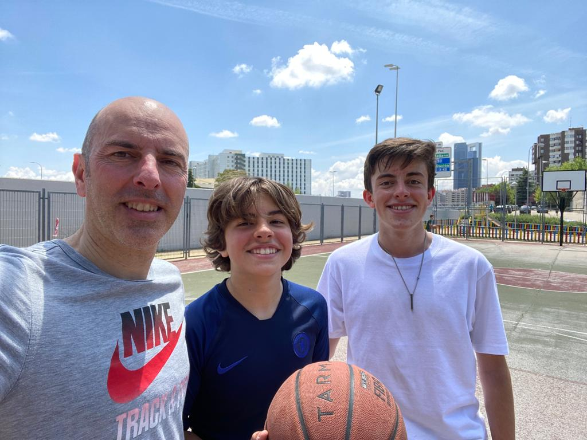

Baloncesto
Reflexión:
Algunos años había estado llendo a entrenamientos de baloncesto, pero no ha sido hasta primero de bachillerato cuando le he empezado a coger el gusto. He empezado a jugar durante casi todos los recreos con mis amigos y otros chavales del instituto, y lo paso muy bien. También jugué el torneo de baloncesto de los patios, y en segundo lideraré su organización. Además, como mi hermano se apuntó a baloncesto en su instituto, también puedo jugar en los fines de semana con él y mi padre.
Resultado de aprendizaje: nº 5.
Pruebas:
- 